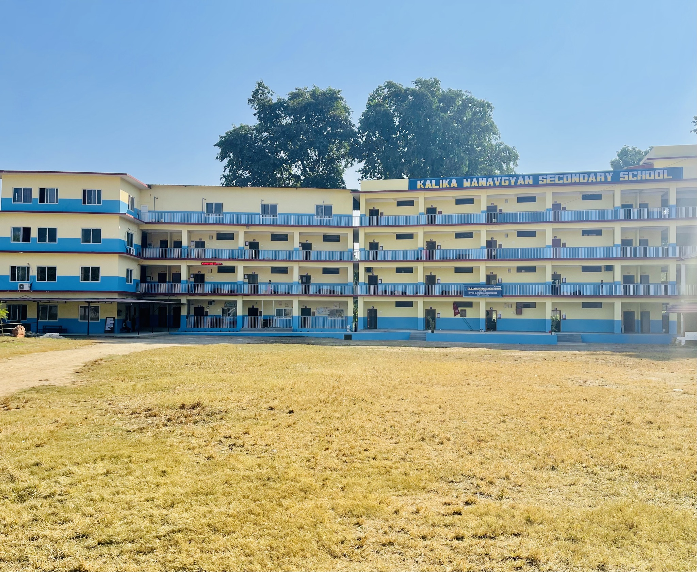

|

|
Co-Curricular Activities
Kalika Managyan gives equal importance to co-curricular activities. Students are encouraged to take part in sports, cultural programs, debates, and art competitions. These activities help students develop talents outside the classroom, build teamwork skills, and boost their self-confidence. The school believes that a child’s personality is shaped not only by books but also by experiences outside the classroom.
Discipline and Moral Values
Discipline is a core value at Kalika Managyan. Students are taught the importance of punctuality, honesty, and respect for others. Moral values are integrated into daily lessons, helping children grow into responsible and caring citizens. The school also encourages community service and social awareness among students, so they understand their role in society.
Facilities and Environment
The school provides a safe and supportive environment for learning. Classrooms are well-equipped, and the library offers a wide range of books for students of all levels. The school also has facilities for sports and extracurricular activities. Teachers are always available to guide students, and the school ensures that each child receives personal attention according to their needs.
Conclusion
Kalika Managyan is more than just a school; it is a place where students are nurtured to become confident, knowledgeable, and responsible individuals. The combination of academic excellence, co-curricular activities, moral guidance, and supportive teachers makes it a respected institution in the community. Students of Kalika Managyan are not only prepared for examinations but also for life, making the school a place of growth, learning, and inspiration.
|